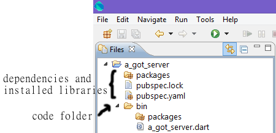

In this lab, you will build a web application from scratch : both the server and client sides. Some samples will be given to you, but these are just base data and boilerplate, everything will be built from scratch. Some programming skills are necessary, but you don't need to know anything about Dart first. During all the lab, don't hesitate to ask questions or for help if you are stuck.
Here is what you should get in the end !
In this step, you will install, both Dart Editor, the SDK and everytools needed.
Dart Editor requires Java version 6 or higher. Please, fill free to use theses provided on the USB keys if you don't allready have it installed.
Use a version compatible with your Operating System (32 or 64 bits). If you still have problems, go to this troubleshoot guide or simply ask for help.
Just copy the folder corresponding to your Operating System somewhere on your hard drive. Please, use a version (32/64 bits) matching the version of your installed JDK.
Go to the dart directory and double-click DartEditor.
Now that your Dart Editor is up and running, we will test his basic functionalities.
In the top menu, go to File -> New Project...
Name it as you want : got-server will be a good one
Check "Generate sample content"
Choose "Command-line application" from the list
You should get a project structure similar to the following one :
Side notes
The packages directory will contain all the dependencies we use in the project. We currently have none, we will get to it quite soon. The pubspec.lock file is simply a list of the allready downloaded packages. Dart Editor should handle these for you.
The pubspec.yaml file describes our project and its dependencies.
The bin folder will contain our Dart source files. There should only be one for now.
pubspec.yaml file:
dependencies: my_dependency: path: /path/to/the/folder/my_dependency
Simply choose what will be printed. Don't be affraid and try String interpolation while generating your message.
Right click on your dart file and select Run. You can also use the Ctrl + R shortcut.
Is your message printed on the console?
Ok, we have something that runs on our computer, but we are supposed to build a web application. Where is my server?
Don't worry, it's quite easy. We will use the HttpServer class found in the dart:io package.
1import 'dart:io';main() {2HttpServer.bind('localhost', 8080).then((HttpServer server) {3print('Server started on port ${server.port}');4server.listen((HttpRequest request) { request.response..write('Hello EclipseCon!'); ..close(); }); }); }
1 We must import the dart:io package in order to use the HttpServer class and everything related to inputs/outputs.
2 We bind our webserver to the localhost address (IP 127.0.0.1, or 0.0.0.0) on port 8080.
This bind method returns a Future. As we have seen, we can call the then method on this future with a function that will be executed once the Future completes.
3 We simply print that our server successfully started.
4 We register a method to execute on incoming requests.
Run your dart file again, it should print that your webserver started.
If it's the case simply head to http://localhost:8080 with your favorite web browser.
It should print your message, isn't it?
Fine, we are able to print a String from our webserver and see it in our web browser. We will now serve usefull data instead of a simple message. In our case, a JSON (Javascript Serialization Object Notation).
Start by copying the file characters.json in the bin folder of your project.
We will simply put the file content in our response for now. We will improve this part much later.
import 'dart:io';
main() {
File jsonFile = new File("characters.json");
String fileContent = jsonFile.readAsStringSync();
...
request.response..write(fileContent);
..close();
...
}
readAsStringSync() method which is a synchronous method to be sure the file has been completely read before starting the webserver. Another way to do would have been to use the readAsString() method which returns a Future and process with the server launch in the handler method.
Simply stop and run your webserver again, you should be used to it as it's the third time.
Check in your web browser that the file content is printed.